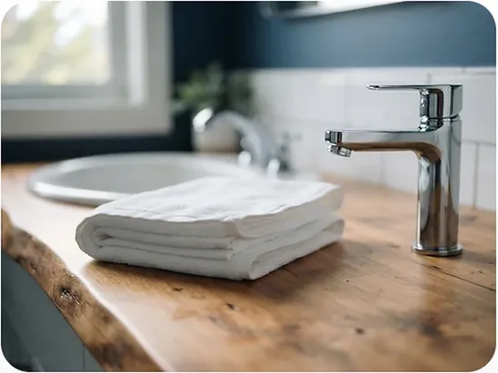

Fully Insured
Every visit is backed by complete insurance for your protection and total peace of mind.
⌖ PALMER LAKE & TRI-LAKES, COLORADO
Serving Palmer Lake & the Tri-Lakes area. Spotless homes, reliable service, and total peace of mind with local owner Anabeli Pineda.


ABOUT QUALITY HOUSE CLEANING
For over 20 years, Anabeli Pineda has treated the homes of Palmer Lake and the Tri-Lakes area not as chores to manage, but as environments of peace to perfect. Quality House Cleaning was built on a simple belief: a spotless home is the foundation of a calm life. Fully insured and locally owned, every detail is handled with the kind of quiet precision that keeps guests returning.
Every visit is backed by complete insurance for your protection and total peace of mind.
Refined mastery — two decades of hands-on expertise means every detail is handled with quiet precision.
Anabeli Pineda lives in the community she serves — your neighbor, not a franchise.
SERVICE MATRIX
Each offering is built around consistent quality, clear pricing, and reliable scheduling.
From $220